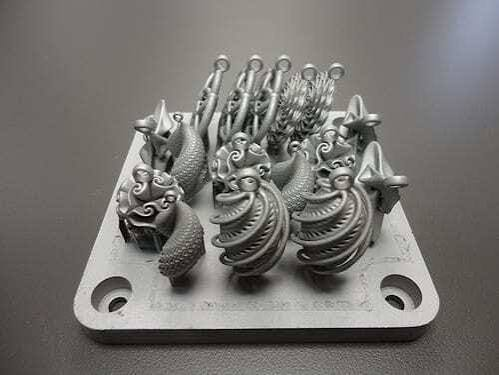

Última hora: fabricante lança impressora 3D de metal que produz peças de motor em até 24 horas

Impressora 3D industrial de metal em operação
Uma fabricante de equipamentos industriais anunciou hoje uma nova impressora 3D de metal que promete reduzir o tempo de produção de componentes para motores. Peças que levavam semanas para ser usinadas poderão ficar prontas em menos de um dia.
O que muda para a engenharia?
Com a nova tecnologia, engenheiros poderão testar protótipos metálicos funcionais com muito mais rapidez, o que encurta o ciclo de desenvolvimento e reduz o custo de ferramentas.
A fabricante afirma que o equipamento também diminui o desperdício, já que usa apenas o pó metálico necessário para formar cada peça.
Principais destaques
- Produção de peças metálicas em até 24 horas
- Compatível com aço, alumínio e titânio
- Menor desperdício de material
- Previsão de chegada ao mercado no próximo ano
Especificações do equipamento
| Característica | Valor |
|---|---|
| Tecnologia | SLM (Fusão Seletiva a Laser) |
| Materiais | Aço, alumínio e titânio |
| Volume de impressão | 300 x 300 x 400 mm |
| Tempo médio por peça | Até 24 horas |